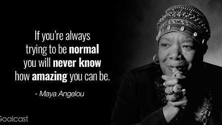

ANKIT KUKRETY
Introductory pageContact Me
Founder and COO of CARPEDIEM IAS PCS ACADEMY My FB Link
| |
ANKIT KUKRETYIntroductory pageContact Me Founder and COO of CARPEDIEM IAS PCS ACADEMY My FB Link |
 |
Manager Business Operations- Easy Ration Retail Pvt Ltd
Easy Ration Retail Pvt ltd is an e-commerce startup in Delhi-NCR region. It has seen the tide of success in just 2 years of its span. The new and innovative concept to take grocery, fruit and vegetable online. The company has its reach in Delhi-NCR and has also started its operations in Hyderabad. It was recently acquired by Mangoshoppers.com Pvt Ltd.